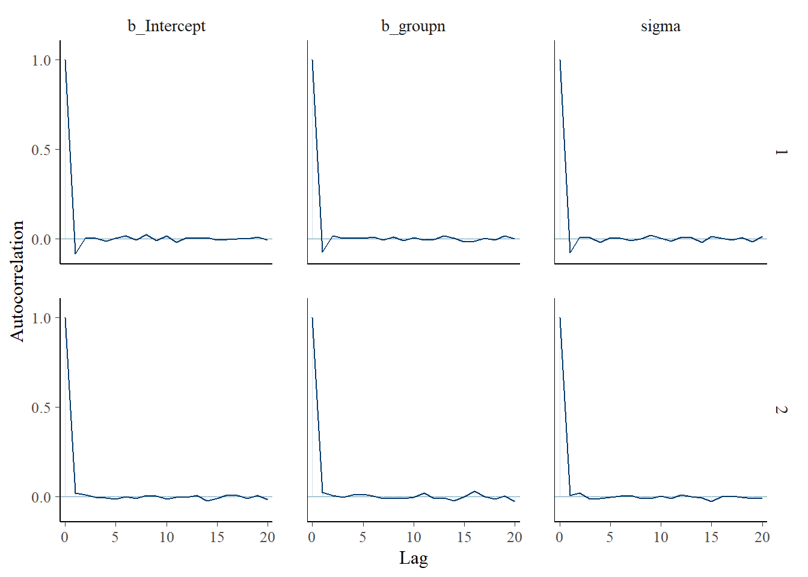
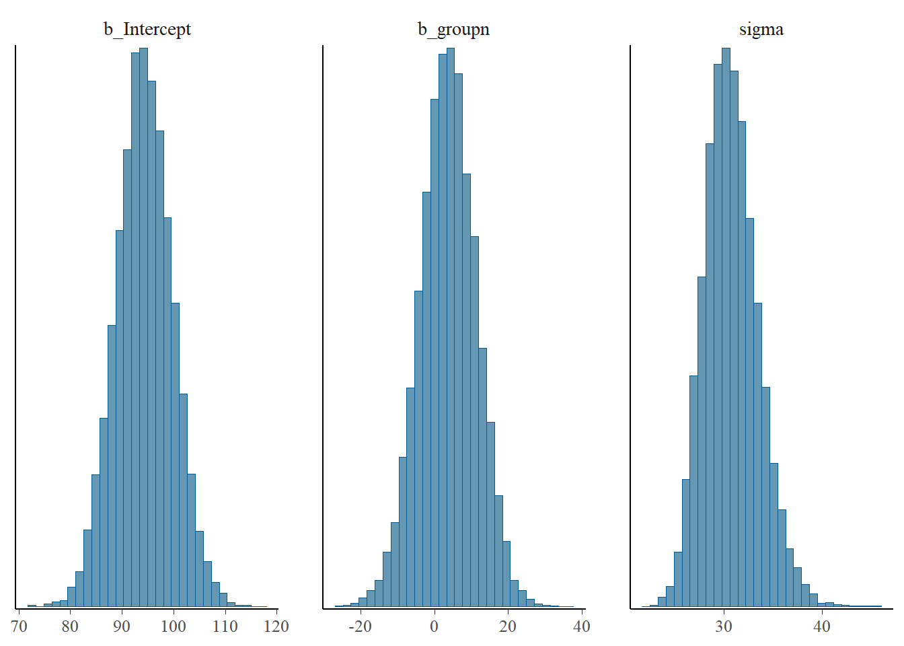

Bayesian 101
Overview
This module covers a crash course in Bayesian statistics. While many adaptive trial elements can be done with frequentist methods, Bayesian methods provide additional flexibility. We will introduce the basics of the Bayesian approach to statistics and cover a brief example analysis of a clinical trial using Bayesian methods.
Code Examples in R
Software Options
There are lots of statistical packages and approaches that we can use to either run Bayesian models in R, or to connect R with external software to implement the models. Some options include:
brmspackage: implements the Stan programming language within R, syntax is similar to thelme4package, this is our focus for Bayesian examplesrstanandrstanarmpackages: implements the Stan programming language within R,rstanarmuses standardglmsyntax, runs more quickly thanbrmssince models are pre-compiledbayestestrpackage: can provide Bayes factors and works withrstanarm,brms, andBayesFactorR2jags,rjags,runjagspackages: implements JAGS (just another Gibbs sampler) which allows for non-gradient sampling, JAGS is one of the “original” approaches for implementing Bayesian analyses via software (that I remember), can be a little clunkier than other options
It is worth noting that within each software distributions may use different parameterizations, so caution should be taken to ensure the desired prior values are used. For example, the normal distribution in JAGS uses the precision (i.e., \(\tau = \frac{1}{\sigma^2}\)), whereas Stan uses the standard deviation (i.e., \(\sigma\)).
Dr. Kruschke has a nice introduction to Bayesian textbook that includes some instructions for installing software for Bayesian analyses. You may also be interested in exploring the textbook for more background on Bayesian theory, methods, and implementation.
Additionally, Stata and SAS (e.g., PROC MCMC and PROC GENMOD) include Bayesian options. These are detailed in “A practical guide to adopting Bayesian analyses in clinical research” for step-by-step guidance on their implementation.
Linear Regression Code from “A practical guide to adopting Bayesian analyses in clinical research”
This section provides the code from the published paper in R. The dataset for the paper is included in the corresponding GitHub repository hosted by Dr. Nichole Carlson, but can also be downloaded as CSV here for convenience: drugtrial.csv.
For simplicity, we focus on comparing priors across simple linear regression models, but the GitHub repository includes examples for multiple linear regression and logistic regression models as well. In this example, we have a continuous outcome of time to readiness for discharge (in minutes) that are compared by two randomized treatment groups (sufentanil (new treatment) versus IV fentanyl).
First, let’s load our packages and read in our data:
# CALL LIBRARIES
library(brms) #Bayesian modeling capabilities
library(bayestestR) #particular Bayesian tests
# READ IN CLINICAL TRIAL DATA FROM PAPER
trial <- read.csv('files/drugtrial.csv')
### CHECK OUT TOP ROWS OF DATA
## trial mini-data dictionary:
# rowid: trial ID
# in_phase_1_to_out_of_phase_2: time to readiness for discharge after arrival in PACU (minutes)
# sex_n: sex of participant (1=female, 0=male)
# groupn: randomized group (1=sufentanil, 0=IV fentanyl)
# blockn: preoperative nerve block used (1=yes, 0=no)
# proc_length_center: procedure length (minutes)
head(trial)## rowid in_phase_1_to_out_of_phase_2 sex_n groupn blockn proc_length_center
## 1 1 60 1 0 0 -37.8
## 2 2 69 1 1 1 -10.8
## 3 3 102 1 1 0 -57.8
## 4 4 165 1 0 0 22.2
## 5 5 115 1 1 0 140.2
## 6 6 104 0 0 1 21.2Frequentist Simple Linear Regression
For comparison sake, we can first fit our frequentist simple linear
regression using the glm function:
# Syntax: <name of model object> <- glm(<outcome variable> ~ <predictor variable>, data = <datasetname>, family=<distribution corresponding to model type>)
lin_reg <- glm(in_phase_1_to_out_of_phase_2 ~ groupn,
data=trial,
family='gaussian')
# Syntax: summary(<model object>) - function to show model parameter estimates/results
summary(lin_reg)##
## Call:
## glm(formula = in_phase_1_to_out_of_phase_2 ~ groupn, family = "gaussian",
## data = trial)
##
## Coefficients:
## Estimate Std. Error t value Pr(>|t|)
## (Intercept) 94.364 5.289 17.842 <2e-16 ***
## groupn 3.727 7.480 0.498 0.62
## ---
## Signif. codes: 0 '***' 0.001 '**' 0.01 '*' 0.05 '.' 0.1 ' ' 1
##
## (Dispersion parameter for gaussian family taken to be 923.0682)
##
## Null deviance: 59306 on 65 degrees of freedom
## Residual deviance: 59076 on 64 degrees of freedom
## AIC: 641.9
##
## Number of Fisher Scoring iterations: 2# Syntax: confint() - print confidence intervals in console
confint(lin_reg)## 2.5 % 97.5 %
## (Intercept) 83.99771 104.7296
## groupn -10.93236 18.3869brms Bayesian Simple Linear Regression Syntax
The general syntax for using brm is described below:
# Syntax: using brm function for Bayesian modeling
# <name of model object> <- brm(<outcome variable> ~ <predictor variable>,
# data = <datasetname>,
# family=<distribution corresponding to model type>,
# prior = c(set_prior("<distribution(mean,SD)", class = "<name>")),
# seed = <value - for reproducibility>,
# init = <name of initial values list>,
# warmup = <sets the # of burn-in iterations (those that will be 'thrown out')>,
# iter = <# of total iterations for each chain including burn-in>
# chains = <# of chains>,
# cores = <#> to use for executing chains in parallel - for processing)We also will create a set of initial values to use for each our simple linear regressions below:
# Set initial starting values for chains by creating a list, will be used for all simple linear regressions
# Syntax: list(<model parameter> = <starting value>); be sure to list all parameters
inits <- list(
Intercept = 0,
sigma = 1,
beta = 0 )
# Syntax: <new_list> <- list(<initial values list name>) - Create list of all initial values
list_of_inits <- list(inits, inits, inits)brms SLR with Pseudo Vague Prior
In this example, we fit a “pseudo-vague” prior where \(\sigma^2 = 1000\) or, equivalently, \(\sigma = \sqrt{1000} = 31.62278\). Here we call the prior “pseudo-vague” because it turns out that while it seems like a large variance, since \(\beta_0 \sim N(\mu=0, \sigma=31.62278)\), there is some biasing towards a mean of 0.
fit_lin_1 <-brm(in_phase_1_to_out_of_phase_2 ~ groupn,
data=trial,
family='gaussian',
prior = c(set_prior("normal(0,31.62278)", class = "b"),
set_prior("normal(0,31.62278)", class ="Intercept"),
set_prior("inv_gamma(0.01,0.01)", class="sigma")),
seed= 123,
init=list_of_inits,
warmup = 1000, iter = 10000, chains = 2, cores=4,
save_pars = save_pars(all = TRUE))
# Summarize parameters
summary(fit_lin_1)## Family: gaussian
## Links: mu = identity; sigma = identity
## Formula: in_phase_1_to_out_of_phase_2 ~ groupn
## Data: trial (Number of observations: 66)
## Draws: 2 chains, each with iter = 10000; warmup = 1000; thin = 1;
## total post-warmup draws = 18000
##
## Regression Coefficients:
## Estimate Est.Error l-95% CI u-95% CI Rhat Bulk_ESS Tail_ESS
## Intercept 93.05 5.34 82.48 103.53 1.00 18799 13379
## groupn 3.55 7.42 -10.90 18.16 1.00 17970 13260
##
## Further Distributional Parameters:
## Estimate Est.Error l-95% CI u-95% CI Rhat Bulk_ESS Tail_ESS
## sigma 30.71 2.75 25.89 36.59 1.00 19382 13421
##
## Draws were sampled using sampling(NUTS). For each parameter, Bulk_ESS
## and Tail_ESS are effective sample size measures, and Rhat is the potential
## scale reduction factor on split chains (at convergence, Rhat = 1).# Obtain highest density posterior interval
bayestestR::hdi(fit_lin_1, ci=0.95) ## Highest Density Interval
##
## Parameter | 95% HDI
## ------------------------------
## (Intercept) | [ 82.66, 103.66]
## groupn | [-10.79, 18.24]# Syntax: plot() - print Bayesian diagnostic plots to console, plots in one figure
plot(fit_lin_1)
# Request plots individually
mcmc_plot(fit_lin_1, type="hist") #histogram
mcmc_plot(fit_lin_1, type="trace") #trace plotmcmc_plot(fit_lin_1, type="acf") #autocorrelation plot
# Syntax: prior_summary() - print priors used in console
prior_summary(fit_lin_1)## prior class coef group resp dpar nlpar lb ub source
## normal(0,31.62278) b user
## normal(0,31.62278) b groupn (vectorized)
## normal(0,31.62278) Intercept user
## inv_gamma(0.01,0.01) sigma 0 user# Extract posterior chains
post_samp <- as_draws(fit_lin_1)
# Combine and extract drug group posterior estimates (can add more list items if more than 2 chains)
xpost <- c(post_samp[[1]]$b_groupn, post_samp[[2]]$b_groupn)
# Calculate the posterior probability that our group predictor is less than 0
mean(xpost < 0) ## [1] 0.3167222brms SLR with Vague Prior
In this example, we fit a “vague” prior where \(\sigma^2 = 10000\) or, equivalently, \(\sigma = \sqrt{100} = 100\).
fit_lin_2 <- brm(in_phase_1_to_out_of_phase_2 ~ groupn,
data=trial,
family='gaussian',
prior = c(set_prior("normal(0,100)", class = "b"),
set_prior("normal(0,100)", class = "Intercept"),
set_prior("inv_gamma(0.01,0.01)", class="sigma")),
seed= 123,
init=list_of_inits,
warmup = 1000, iter = 10000, chains = 2, cores=4)
summary(fit_lin_2)## Family: gaussian
## Links: mu = identity; sigma = identity
## Formula: in_phase_1_to_out_of_phase_2 ~ groupn
## Data: trial (Number of observations: 66)
## Draws: 2 chains, each with iter = 10000; warmup = 1000; thin = 1;
## total post-warmup draws = 18000
##
## Regression Coefficients:
## Estimate Est.Error l-95% CI u-95% CI Rhat Bulk_ESS Tail_ESS
## Intercept 94.28 5.43 83.71 105.04 1.00 16878 12729
## groupn 3.63 7.60 -11.51 18.32 1.00 17708 11472
##
## Further Distributional Parameters:
## Estimate Est.Error l-95% CI u-95% CI Rhat Bulk_ESS Tail_ESS
## sigma 30.74 2.75 25.89 36.61 1.00 17210 13095
##
## Draws were sampled using sampling(NUTS). For each parameter, Bulk_ESS
## and Tail_ESS are effective sample size measures, and Rhat is the potential
## scale reduction factor on split chains (at convergence, Rhat = 1).bayestestR::hdi(fit_lin_2, ci=0.95) ## Highest Density Interval
##
## Parameter | 95% HDI
## ------------------------------
## (Intercept) | [ 83.20, 104.45]
## groupn | [-11.06, 18.71]plot(fit_lin_2)
mcmc_plot(fit_lin_2, type="hist") 
mcmc_plot(fit_lin_2, type="trace") mcmc_plot(fit_lin_2, type="acf") 
prior_summary(fit_lin_2)## prior class coef group resp dpar nlpar lb ub source
## normal(0,100) b user
## normal(0,100) b groupn (vectorized)
## normal(0,100) Intercept user
## inv_gamma(0.01,0.01) sigma 0 user# OPTION 1 for calculating posterior probabilities:
# Extract posterior chains
post_samp2 <- as_draws(fit_lin_2)
xpost2 <- c(post_samp2[[1]]$b_groupn, post_samp2[[2]]$b_groupn)
# Calculate the posterior probability that our group predictor is less than 0
mean(xpost2 < 0) ## [1] 0.3117778# OPTION 2 for calculating posterior probabilities:
# Extract posterior chains
post_samp2 <- as_draws_df(fit_lin_2)
# Create an indicator for group < 0
post_samp2$indicator <- post_samp2$b_groupn<0
# Calculate the posterior probability
summary(post_samp2$indicator)## Mode FALSE TRUE
## logical 12388 5612brms SLR with Optimistic Prior
In this example, we fit an “optimistic” prior on our treatment group such that \(\beta_1 \sim N(\mu=-30, \sigma=10)\). This was selected based on the estimates used for the power analysis in the original trial where it was estimated that a clinically meaningful difference would be a 30 minute reduction in readiness to discharge.
fit_lin_3 <- brm(in_phase_1_to_out_of_phase_2 ~ groupn,
data=trial,
family='gaussian',
prior = c(set_prior("normal(-30,10)", class = "b", coef = "groupn"),
set_prior("normal(0,100)", class = "Intercept"),
set_prior("inv_gamma(0.01,0.01)", class="sigma")),
seed= 123,
init=list_of_inits,
warmup = 1000, iter = 10000, chains = 2, cores=4)
summary(fit_lin_3)## Family: gaussian
## Links: mu = identity; sigma = identity
## Formula: in_phase_1_to_out_of_phase_2 ~ groupn
## Data: trial (Number of observations: 66)
## Draws: 2 chains, each with iter = 10000; warmup = 1000; thin = 1;
## total post-warmup draws = 18000
##
## Regression Coefficients:
## Estimate Est.Error l-95% CI u-95% CI Rhat Bulk_ESS Tail_ESS
## Intercept 100.48 4.99 90.87 110.33 1.00 14460 12578
## groupn -8.79 6.24 -21.28 3.14 1.00 14788 12967
##
## Further Distributional Parameters:
## Estimate Est.Error l-95% CI u-95% CI Rhat Bulk_ESS Tail_ESS
## sigma 31.33 2.86 26.32 37.54 1.00 15824 13469
##
## Draws were sampled using sampling(NUTS). For each parameter, Bulk_ESS
## and Tail_ESS are effective sample size measures, and Rhat is the potential
## scale reduction factor on split chains (at convergence, Rhat = 1).bayestestR::hdi(fit_lin_3, ci=0.95) #get 95% HDP Credible Intervals## Highest Density Interval
##
## Parameter | 95% HDI
## ------------------------------
## (Intercept) | [ 90.51, 109.89]
## groupn | [-20.89, 3.41]plot(fit_lin_3)
mcmc_plot(fit_lin_3, type="hist") mcmc_plot(fit_lin_3, type="trace") mcmc_plot(fit_lin_3, type="acf") 
prior_summary(fit_lin_3)## prior class coef group resp dpar nlpar lb ub source
## (flat) b default
## normal(-30,10) b groupn user
## normal(0,100) Intercept user
## inv_gamma(0.01,0.01) sigma 0 user# Extract posterior chains
post_samp3 <- as_draws(fit_lin_3)
xpost3 <- c(post_samp3[[1]]$b_groupn, post_samp3[[2]]$b_groupn)
# Calculate the posterior probability that our group predictor is less than 0
mean(xpost3 < 0) ## [1] 0.9235brms SLR with Skeptical Prior
In this example, we fit a “skeptical” prior on our treatment group such that \(\beta_1 \sim N(\mu=0, \sigma=10)\). This prior represents a skeptics belief that there is a meaningful treatment difference by centering the treatment effect at 0 with smaller variance than our vague prior.
fit_lin_4 <- brm(in_phase_1_to_out_of_phase_2 ~ groupn,
data=trial,
family='gaussian',
prior = c(set_prior("normal(0,10)", class = "b", coef = "groupn"),
set_prior("normal(0,100)", class = "Intercept"),
set_prior("inv_gamma(0.01,0.01)", class="sigma")),
seed= 123,
init=list_of_inits,
warmup = 1000, iter = 10000, chains = 2, cores=4)
summary(fit_lin_4)## Family: gaussian
## Links: mu = identity; sigma = identity
## Formula: in_phase_1_to_out_of_phase_2 ~ groupn
## Data: trial (Number of observations: 66)
## Draws: 2 chains, each with iter = 10000; warmup = 1000; thin = 1;
## total post-warmup draws = 18000
##
## Regression Coefficients:
## Estimate Est.Error l-95% CI u-95% CI Rhat Bulk_ESS Tail_ESS
## Intercept 94.95 4.92 85.27 104.53 1.00 18329 12418
## groupn 2.27 5.98 -9.59 14.05 1.00 17125 13003
##
## Further Distributional Parameters:
## Estimate Est.Error l-95% CI u-95% CI Rhat Bulk_ESS Tail_ESS
## sigma 30.66 2.73 25.90 36.53 1.00 16139 13918
##
## Draws were sampled using sampling(NUTS). For each parameter, Bulk_ESS
## and Tail_ESS are effective sample size measures, and Rhat is the potential
## scale reduction factor on split chains (at convergence, Rhat = 1).bayestestR::hdi(fit_lin_4, ci=0.95) #get 95% HDP Credible Intervals## Highest Density Interval
##
## Parameter | 95% HDI
## -----------------------------
## (Intercept) | [85.18, 104.41]
## groupn | [-9.22, 14.32]plot(fit_lin_4)
mcmc_plot(fit_lin_4, type="hist") 
mcmc_plot(fit_lin_4, type="trace") 
mcmc_plot(fit_lin_4, type="acf") prior_summary(fit_lin_4)## prior class coef group resp dpar nlpar lb ub source
## (flat) b default
## normal(0,10) b groupn user
## normal(0,100) Intercept user
## inv_gamma(0.01,0.01) sigma 0 user# Extract posterior chains
post_samp4 <- as_draws(fit_lin_4)
xpost4 <- c(post_samp4[[1]]$b_groupn, post_samp4[[2]]$b_groupn)
# Calculate the posterior probability that our group predictor is less than 0
mean(xpost4 < 0) ## [1] 0.3480556References
Below are some references to highlight based on the slides and code:
- A practical guide to adopting Bayesian analyses in clinical research: 2024 tutorial paper exploring the Bayesian approach to statistics and how to apply the methods for clinical trials